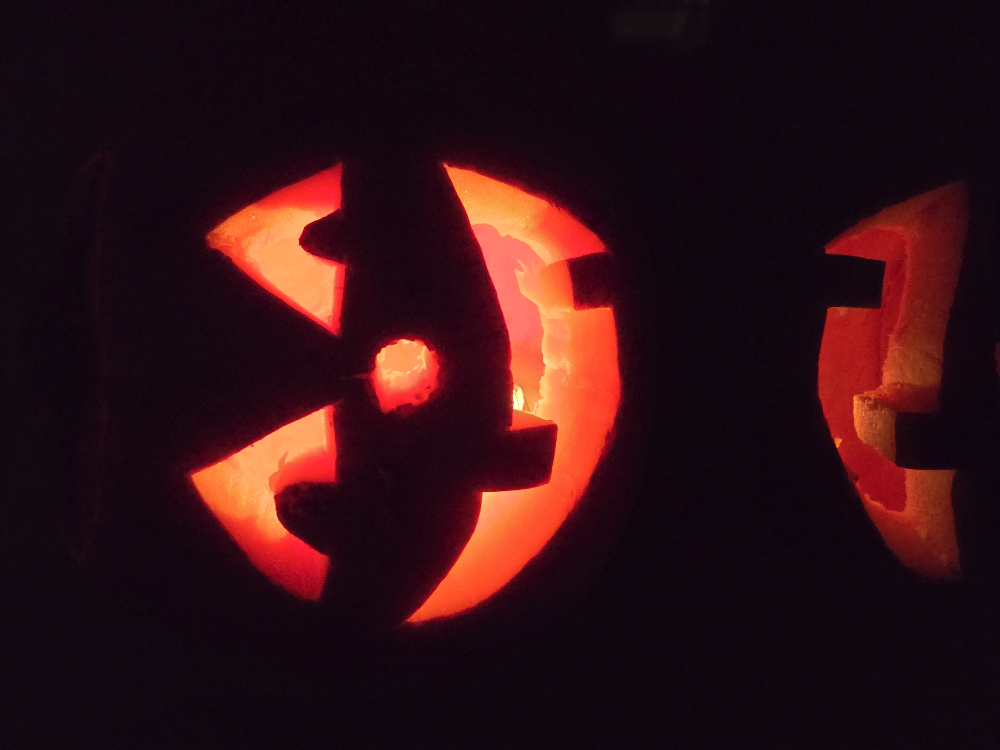

🎃JAU PASKELBTI LAIMĖTOJAI!🎃
Moliūgų skobimo konkursas
Prizai:
1 vieta: 2 porcijos moliūgų skonio užpilamų makaronų, 1 antistresinis žaislas "VAIDUOKLIUKAS" ir 1 trintukas su voriuko paveikslėliu.
2 vieta: 1 "VAIDUOKLIO" helovino apsiaustas.
3 vieta: 1 helovino dekoracija "VORIUKAS IR JO TINKLAS".
Laimėtojai:
1 vieta: Ugninis Linksmuolis

2 vieta: Moliugis:)

3 vieta: Moliūgas nr. 1985

Kaip išsiskobti moliūgą:
1. Aštriu virtuviniu peiliu nupjauk moliūgo viršų - tai bus jo "dangtis".
2. Šaukštu išskobk moliūgo vidų. Minkštimą pasilik - jį galima skaniai suvalgyti.
3. Flomasteriu moliūgui nupiešk veiduko kontūrus.
4. Atsargiai išpjauk piešinio elementus peiliuku.
5. Kai būsi patenkintas vaizdu, į vidų įdėk 2 mažas "tabletės" pavidalo žvakutes.
6. Tuomet į moliūgą pabarstyk šiek tiek cinamono, jei nori, kad namai gardžiai kvepėtų.